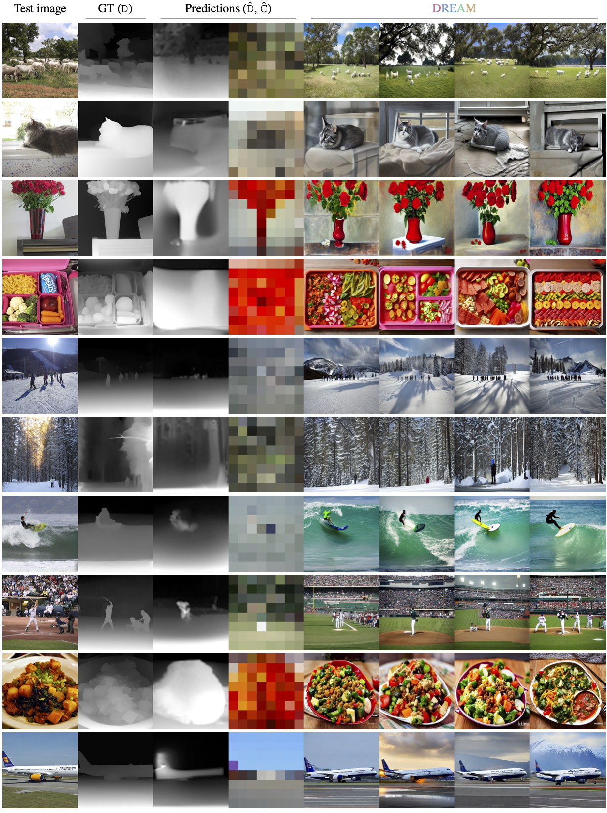
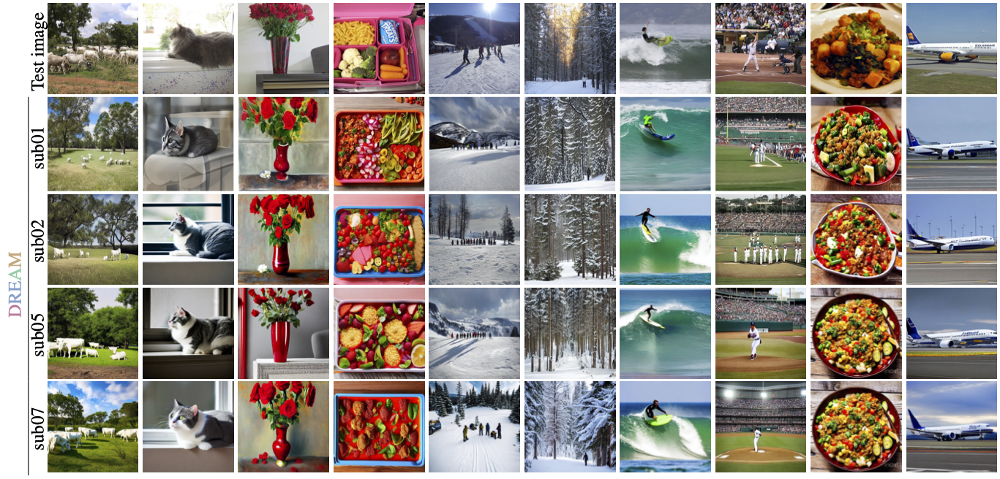

Abstract
We present DREAM, a visual Decoding method from REversing HumAn Visual SysteM.
DREAM is an fMRI-to-image method for reconstructing viewed images from brain activities, grounded on fundamental knowledge of the human visual system (HVS). We craft reverse pathways that emulate the hierarchical and parallel nature of how humans perceive the visual world. These tailored pathways are specialized to decipher semantics, color, and depth cues from fMRI data, mirroring the forward pathways from visual stimuli to fMRI recordings.
Two components mimic the inverse processes within the HVS: the Reverse Visual Association Cortex (R-VAC) which reverses pathways of this brain region, extracting semantics from fMRI data; the Reverse Parallel PKM (R-PKM) component simultaneously predicting color and depth from fMRI. The final images are reconstructed by the Color Adapter (C-A) and the Depth Adapter (D-A) in T2I-Adapter in conjunction with SD from deciphered semantics, color, and depth cues.
Framework Overview

Grounding on the Human Visual System (HVS), we devise reverse pathways aimed at deciphering semantics, depth, and color cues from fMRI to guide image reconstruction.
(Left) Schematic view of HVS. When perceiving visual stimuli, connections from the retina to the brain can be separated into two parallel pathways. The Parvocellular Pathway originates from midget cells in the retina and is responsible for transmitting color information, while the Magnocellular Pathway starts with parasol cells and is specialized in detecting depth and motion. The conveyed information is channeled into the visual cortex for undertaking intricate processing of high-level semantics from the visual image.
(Right) DREAM mimics the corresponding inverse processes within the HVS: the Reverse VAC replicates the opposite operations of this brain region, analogously extracting semantics as a form of CLIP embedding from fMRI; and the Reverse PKM maps fMRI to color and depth in the form of spatial palettes and depth maps to facilitate subsequent processing by the Color Adapter (C-A) and the Depth Adapter (D-A) in T2I-Adapter in conjunction with SD for image reconstruction from deciphered semantics, color, and depth cues.
Visual Decoding with DREAM
Our study shows that current visual decoding methods often underscored and unnoticed color, which in fact plays an indispensable role. The images generated without color guidance, while accurate in semantics, deviate in color from the original visual stimuli. This phenomenon arises due to the absence of proper color guidance and address the significance role of color in visual decoding.
We show reconstruction for subject 1 from the NSD dataset. Our approach extracts essential cues from fMRI recordings, leading to enhanced consistency in appearance, structure, and semantics when compared to the viewed visual stimuli. The results are randomly selected. The illustrated depth, color, and final images demonstrate that the deciphered and represented color and depth cues help to boost the performance of visual decoding.
While accurate depth is beneficial for image reconstruction, faithfully recovering the original depth from fMRI is nearly impossible due to the information loss in capturing the brain activities. Still, coarse depth is sufficient in most cases to guide the scene structure and object position such as determining the location of an airplane or the orientation of a bird standing on a branch. Despite not precisely preserving the local color, the estimated color palettes provide a reliable constraint and guidance on the overall scene appearance.
Subject-Specific Results. We visualize subject-specific outputs of DREAM on the NSD dataset. For each subject, the model is retrained because the brain activity varies across subjects. Overall, it consistently reconstructs the test image for all subjects while we note that some reconstruction inaccuracies are shared across subjects.